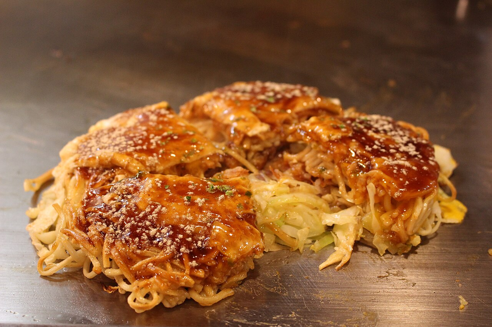

重ねて焼く、広島の一枚
広島のお好み焼きは、生地の上にキャベツや具材、麺などを重ねて焼くスタイルがよく知られています。ひと口ごとにいろいろな食感が楽しめるのも魅力です。
焼き上がりにはソースの香ばしい香りが広がります。お店によって麺や具材、焼き方に個性があるので、気に入った味を見つける楽しみもあります。
最終更新：2026 年 11 月 18 日
広島に来たら一度は食べてほしい、お好み焼きを紹介します。

広島のお好み焼きは、生地の上にキャベツや具材、麺などを重ねて焼くスタイルがよく知られています。ひと口ごとにいろいろな食感が楽しめるのも魅力です。
焼き上がりにはソースの香ばしい香りが広がります。お店によって麺や具材、焼き方に個性があるので、気に入った味を見つける楽しみもあります。
鉄板の前なら、具材が重なって一枚に仕上がる様子も楽しめます。
迷ったときは、紹介している「肉玉そば」から試してみましょう。
何度か訪れたら、店ごとの味や具材の違いにも注目してみてください。
作者：おこのみ（ニックネーム）／写真：EllieBellie25（Wikimedia Commons、CC BY-SA 4.0）／ICT 入門の授業で作成